Morgens entlang der Avenida Chapultepec: Früh raus, zu Fuß durch Roma Norte Richtung Chapultepec. Am Straßenrand verkaufen Stände geschnittenes Obst im Becher – Mango, Papaya, Ananas, dazu Limette und Tajín (Chili-Salz). Über allem ragen die Glastürme am Paseo de la Reforma auf.
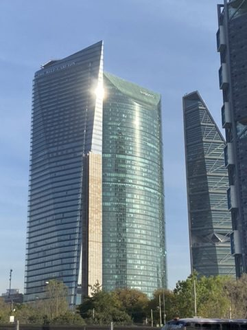
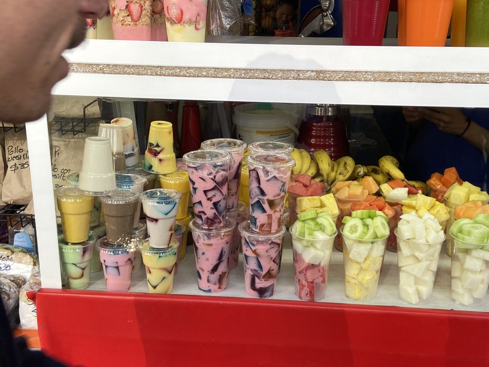
Frühstück to go: Fruchtbecher mit Chili und Limette.
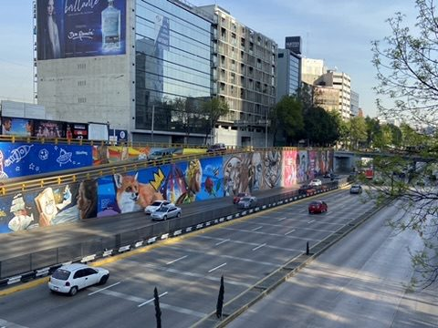
Monolith des Tláloc: Vor dem Nationalmuseum für Anthropologie steht der Regengott Tláloc – ein rund 168 Tonnen schwerer Steinkoloss. 1964 wurde er aus Coatlinchan in die Stadt transportiert; der Überlieferung nach brach bei seiner Ankunft mitten in der Trockenzeit ein Wolkenbruch los.
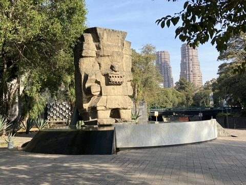
Polanco: Markt und Frühstück: Im Parque Lincoln in Polanco hat samstags der Tianguis (Straßenmarkt) aufgebaut: Berge von Limetten, Mangos und Bananen. Danach Frühstück in einem Restaurant mit prachtvoll geschnitztem Portal – Chilaquiles mit Spiegelei, der Klassiker gegen die lange Nacht.
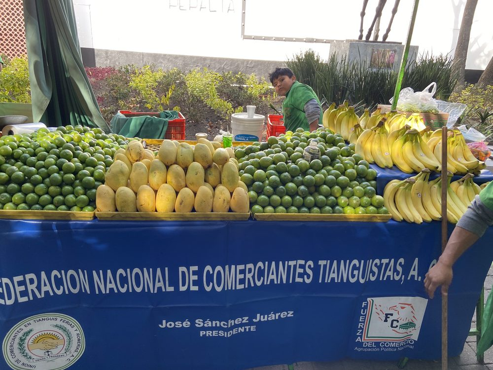
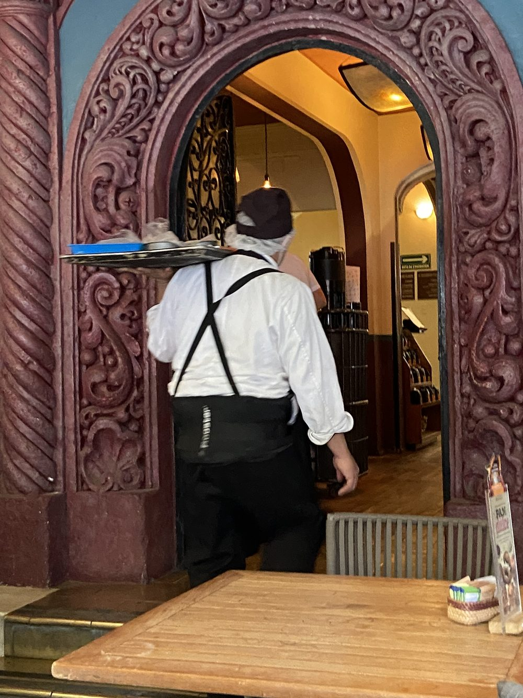
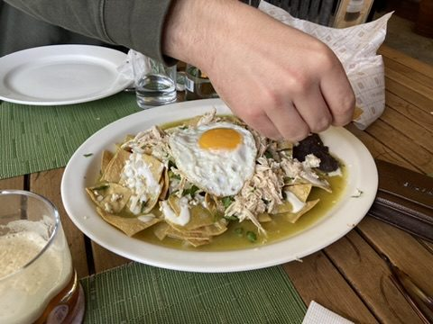
Condesa am Nachmittag: Der Parque México ist das grüne Herz von Condesa – angelegt auf einer ehemaligen Pferderennbahn, daher die ovale Form des Viertels (Hipódromo). Der Brunnen der Wasserkrugträgerin am Foro Lindbergh ist ein Wahrzeichen des Parks; ringsum Art-déco-Häuser und volle Terrassen.
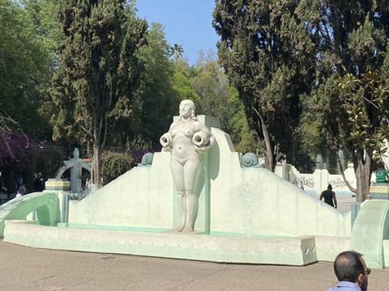
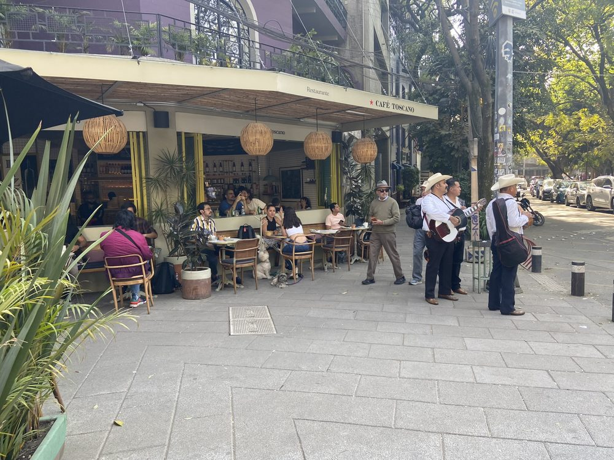
Asado in Lomas: Am Nachmittag Einladung zu Freunden in Lomas: Grill an, Carne asada, lange Tafel im Garten. Die beste Art, eine Stadt kennenzulernen, ist immer noch am Tisch ihrer Leute.
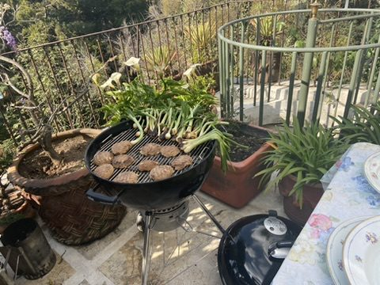
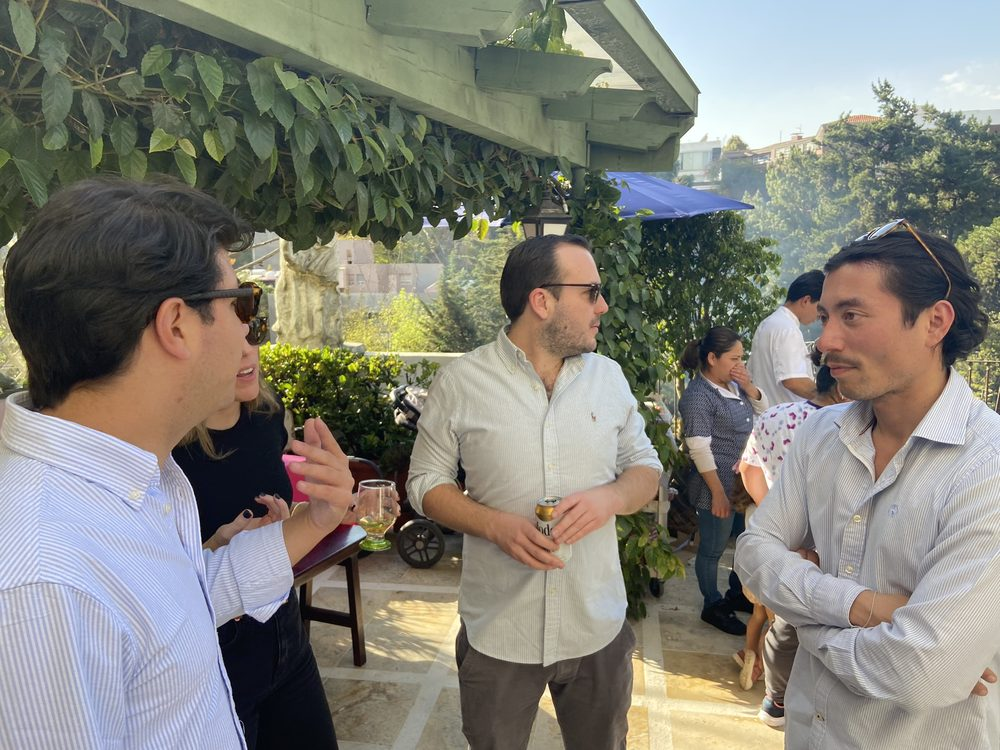
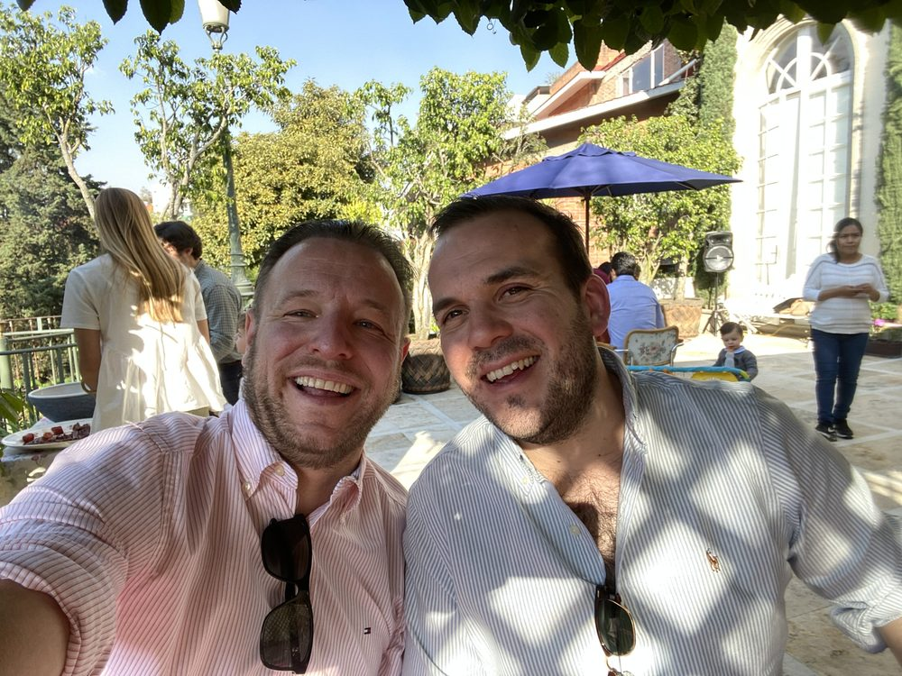
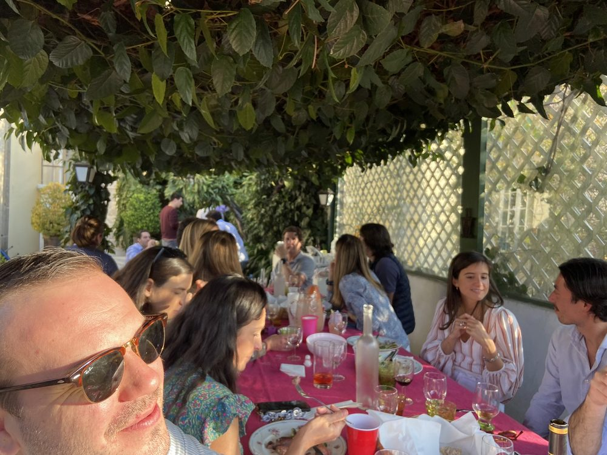
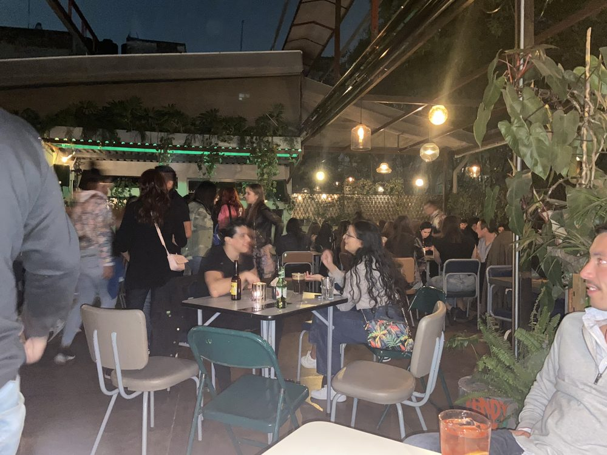
Zum Abschluss noch in eine Bar in Roma Norte an der Avenida Álvaro Obregón.